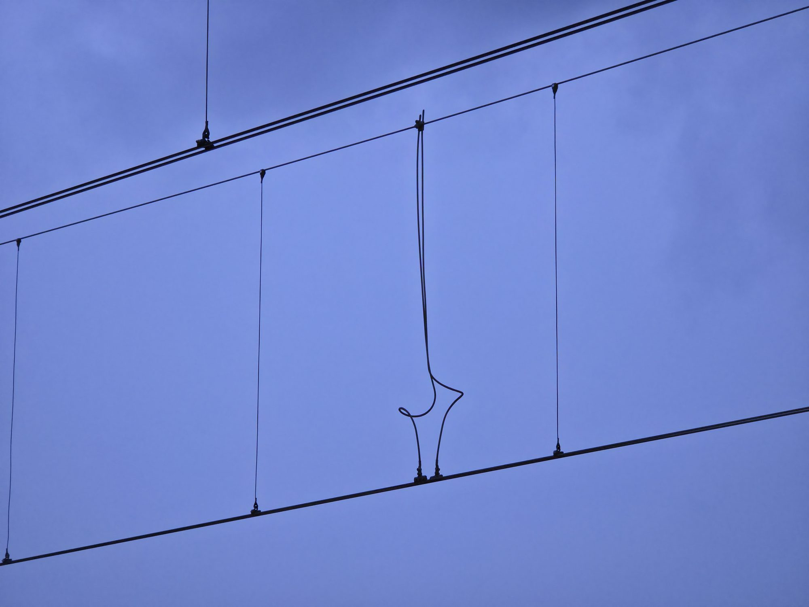
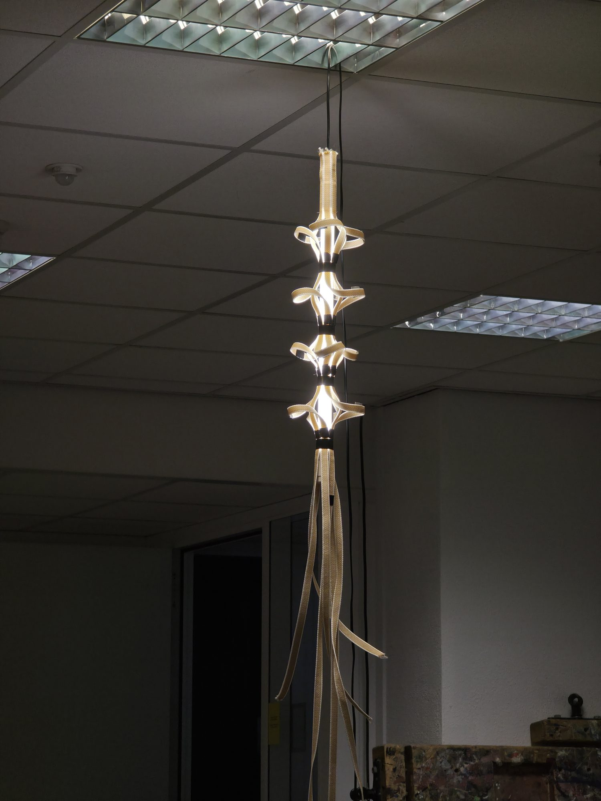
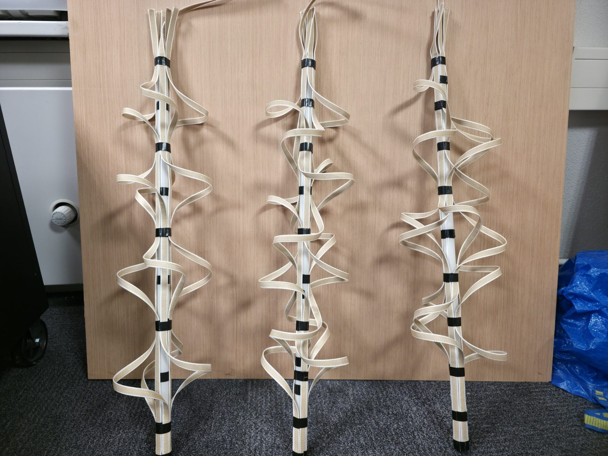
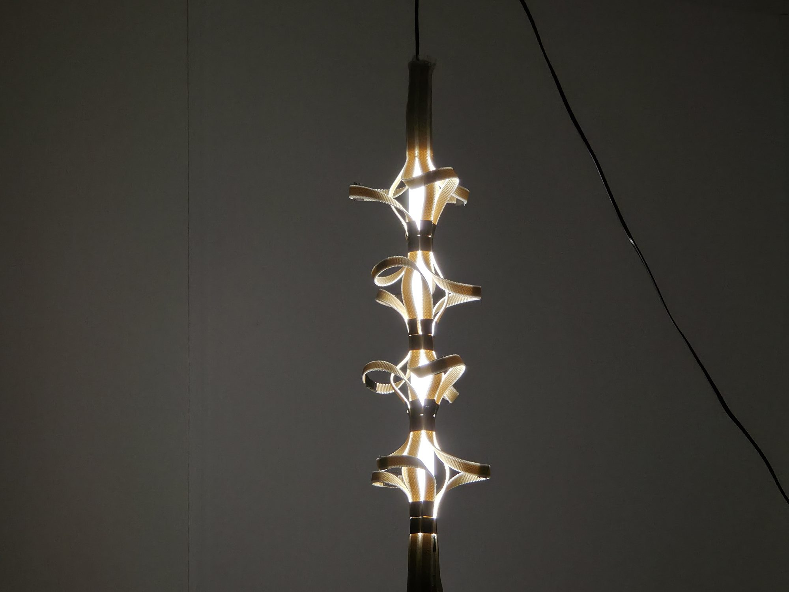

A custom lamp that explores tension in material — shaped into something elegant, while light escapes through the openings in the negative space.
- Material
- Flexible strip material, stitching, linear LED
- Method
- Pre-tension, sewing, rapid iteration
- Context
- Quick inspiration project
For me —
An inspiration project: from everyday objects to a spark of ideas. Learning to make something tangible and personal in a quick setting.
- Tension ↔ Release
- Strip ↔ Volume
- Solid ↔ Void
- Quick ↔ Precise
Fig. 03.01
Plate — night Light escapes through
the negative space Ten— —sion
—sion
Plate — night Light escapes through
the negative space Ten—
SequenceFrom everyday object to spark to objectDrag / scroll →








11 stepsExplore → Discover → Improve
